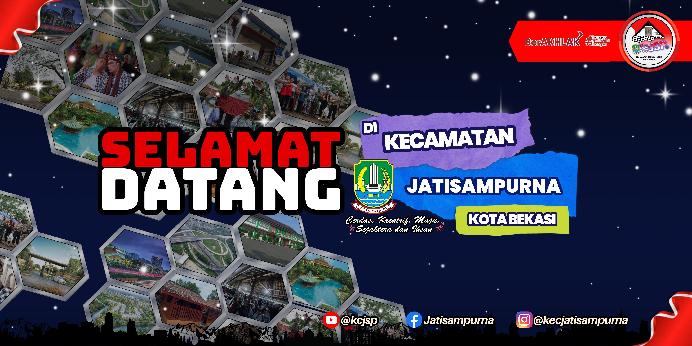

Hemat Waktu
Lebih cepat dalam pencarian data (more searchable).
Hemat Ruang
Lebih aman dalam penyimpanan data (more backup).

Hemat Kertas
Lebih hemat dalam penggunaan kertas (more paperless).

"Program ini dibuat agar pelayanan terhadap masyarakat semakin optimal."
Nata Wirya, S.Sos., M.Si.
Camat Jatisampurna